Фаршированный болгарский перец
7 порций / Время приготовления: 1 час 40 минут
Фаршированный сладкий перец - блюдо молдавской, румынской, болгарской кухни, но популярное и в других странах. Начинка для фаршированного перца может быть самой разной: чаще всего это рис и мясо, но фаршируют перец также различными крупами, сыром, ягодами, рыбой, креветками. Лето и осень - сезон недорогих овощей, и фаршированный перец можно готовить часто.
Продукты
Перец болгарский сладкий - 14-15 шт.
Мясной фарш (свинина+говядина) - 800 г
Рис - 0,5 стакана (примерно 100 г)
Репчатый лук - 4-5 шт.
Морковь - 1-2 шт.
Растительное масло - 20-30 г
Лавровый лист - 1-2 шт.
Черный молотый перец - по вкусу
Соль - по вкусу
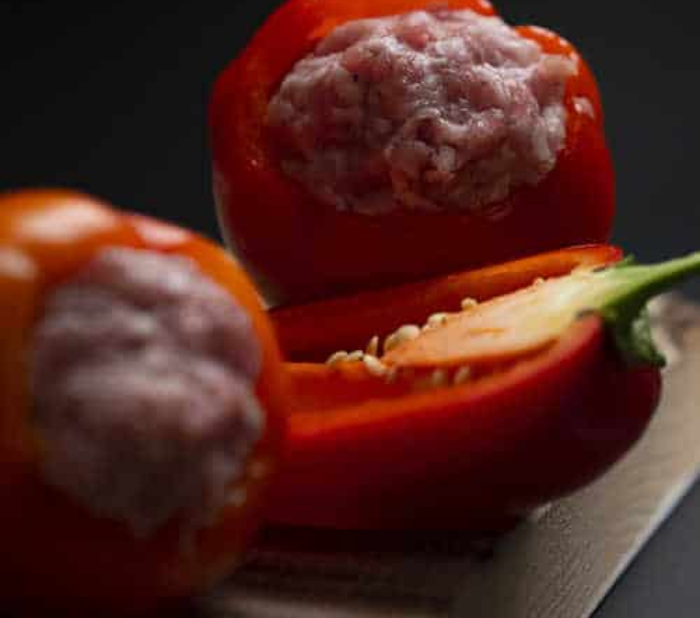
Пошаговый рецепт
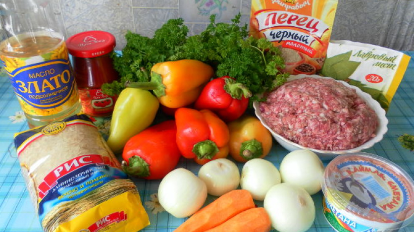
Указанного количества ингредиентов для начинки хватает на 14-15 перцев среднего размера.
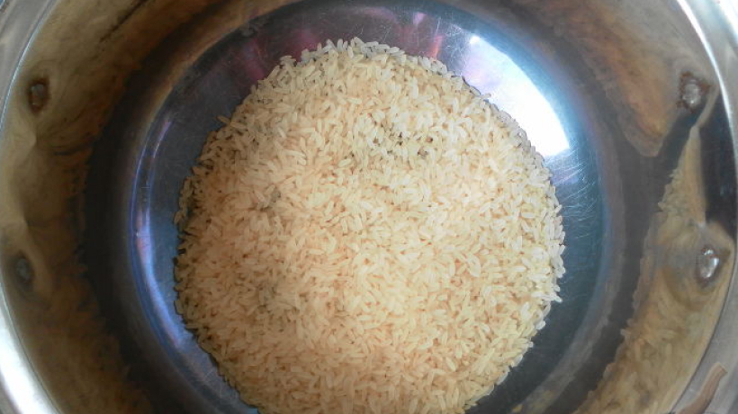
Рис (я использую длиннозерный), засыпаем в кастрюльку, заливаем холодной водой и ставим на огонь. Периодически помешивая, варим до полуготовности - 10-15 минут.
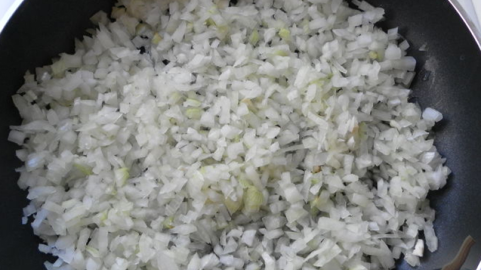
Очищенный лук мелко нарезаем. Отправляем на сковороду в разогретое масло. Пассеруем лук до золотистого цвета.
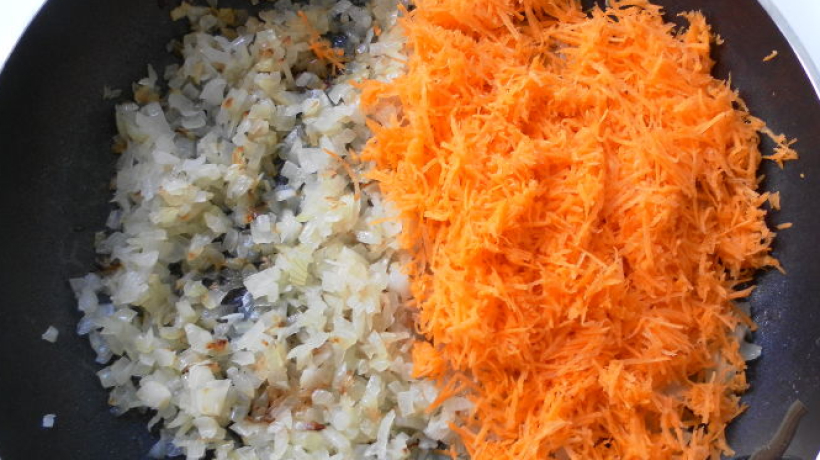
Морковь натираем на мелкой терке. Добавляем к пассерованному луку мелко натертую морковь. Тщательно перемешиваем и жарим на сильном огне 5-10 минут
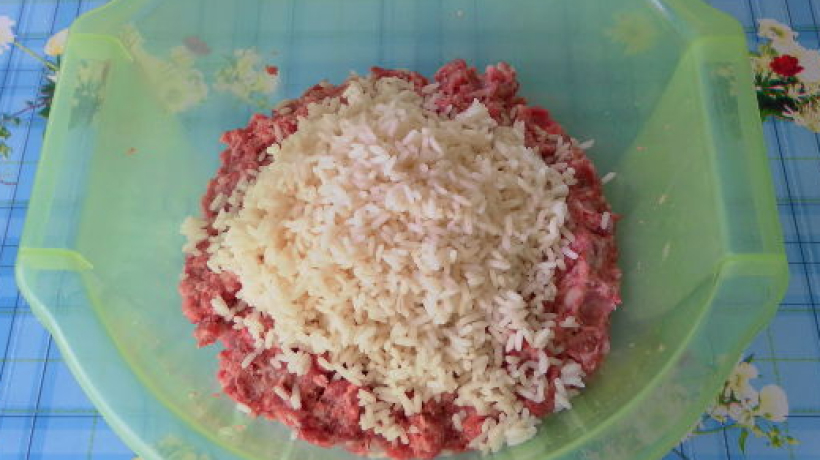
Перекладываем фарш в большую миску и слегка месим его руками. Добавляем к фаршу полуготовый рис и луково-морковную зажарку.
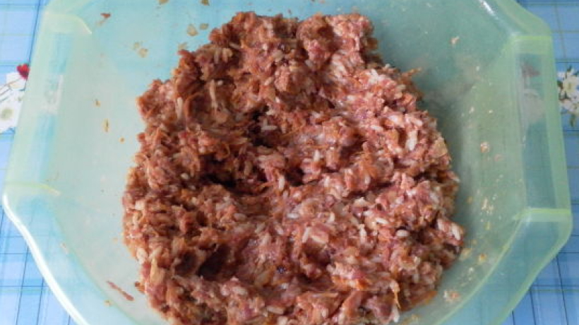
Добавляем соль, черный перец и хорошенько все перемешиваем.
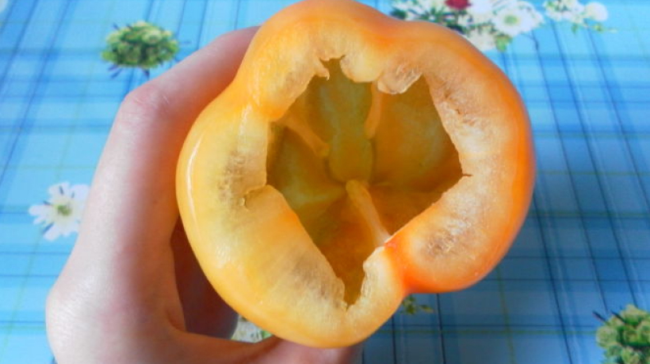
Очищенные перцы промываем проточной водой.
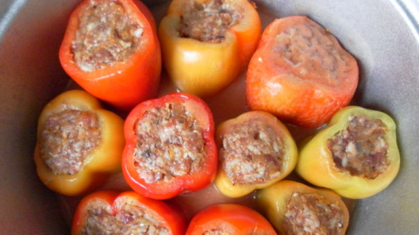
Начиняем подготовленные перцы. Каждый перчик плотно набиваем фаршем до краев. Складываем фаршированный перец в толстостенную большую кастрюлю или казан.
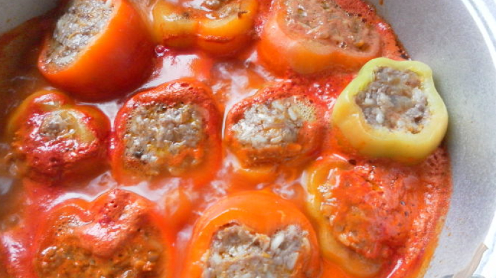
Доводим до кипения и тушим фаршированный перец на среднем огне 30-40 минут под закрытой крышкой.
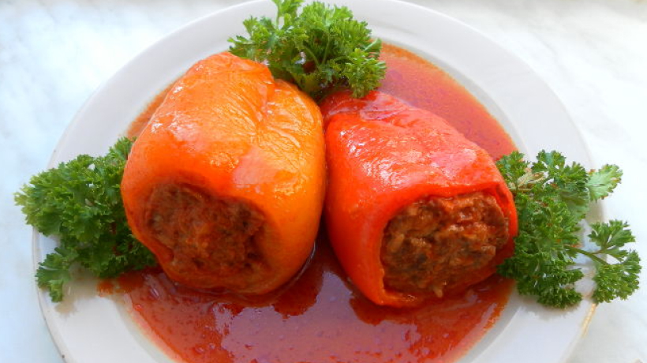
Подаем фаршированные болгарские перцы в горячем виде с подливой, как основное блюдо, или с гарниром.
Приятного аппетита!